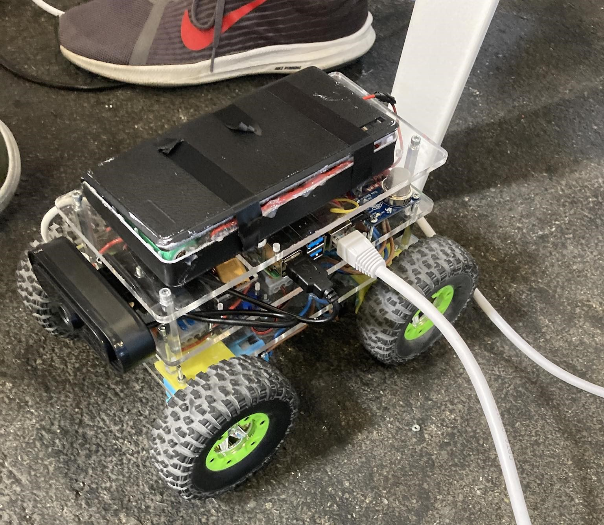

Logisctical Informations
Team name: Kókány Corporations
Organistaion: Nyíregyházi SZC Széchenyi István Technikum és Kollágium
Country: Hungary
Mentor: Mr. Bakti András
Contact Person: Mr. Bakti András
Phone: +3630/252-3931
Email: info@robottep.hu
Website: Our mentor's website
Our team consist of 4 ambitious members. We created this team in 2022 since then we tried our best to participate in various competitions and challenge ourself to hardwer and more complicated porjects. We all plan to go and study close to this subject and enviroment. Most of us is in our last year and soon will be brought to a decision of our future. We all plan to attend to universities and learn more and more. We are good friends with each other and we try to help out whenever we can. It is a mutual relationship between us team mebers. If one of us don't understand the concepts that one thought of we discuss it and move forward with the development. Development is a fun and exhousting activity but the process is what important the fails and rebuilding is what it makes it soo much fun too.
Members of the team

Mr. Bakti András
Role: Mentor
Mr. Bakti András is our mentor. He focuses on making sponsorship deals and the process of the contracts. He's also giving us advives about the robot's pyhscical aspects and he will be responsible for our safety in the Competition. He's on of the teacher in our school.
Mester Máté
Role: Hardware
Máté focuses on the mechanical aspect of our robot, he works on the design and assembly of the robot. He designs the main body, and he designed our latest 3D printed wheels. He also deals with the logistical issues for the team. This is his third year with the team. Mate took intrest in mechanical engineering. He's 18 years old.

Tran Duy Dat
Role: Hardware
Dat also focuses on the mechanical aspect of the robot, he designs parts using CAD software and helps with the assembly of parts. He designed our custom support arm which enables the robot for climbing into high surfaces. He's 18 years old as well and he took intrest in mechanical engineering and web development. He's the one who developped the TDM as a website and designed the team shirt. He's also in his third year in this team.

Vadász Bence
Role: Hardware
Bence is the newest and youngest member of our team, he helps out with the hardware related aspects of our robot and the assembly. He's currently trying to understand the robot itself. He's also the one who designed our team's logo.

Vadász Zsolt
Role: Programmer
Zsolt is responsible for the software of the robot. He's the one who programmed the robot movement and arm functionality as well as the image recognition software. He's intrested in micro controller programming as well as the manufacturing process of these controllers. He's 19 years old.
Competitions we attended so far
MIRK (Hungarian Youth Robo Cup) year 2024

MIRK 2024: This was our third competition and our third win with this we are three times Hungarian champions. The biggest difference is our robot's build. Firstly we moved our motors inline with our electronics with this the height of the robot decreased and the wheight optimalised. We also switched the energy source instead of using 18650 litium batteries we used a Parkside 20V drill battery however with the more voltage we needed two stepdowns instead of one. We also switched back to Motozero instead of the L298n motor driver which helped us with the inner space however the downside of the Motozero was the heat. We needed to install a fan and put on a heatsink to prevent the driver to overheat. We also used servo motors instead of stepper motors. We also realized that the 3D printed parts weren't durable so we found some metal cases and build a arm out of that. The controll of the arm was done with the PCA9868 arduino board. We also finxed the video latency and intalled a second camera for the back view with this we used two person to operate. One was driving the main robot and one was checking with him the camreras. We brought a secondary monitor to see the camera output better.
Previous RoboCup23
RoboÍCup23, Bordeaux France. The first international competition we participate was the RoboCup23 last year. The first thing we wanted to do was the arm. The mistake from MIRK(Hungarian Youth Robo Cup) was that we couldn't use our arm and it prevented us from getting critical points so that time we designed an arm which used 28-BYJ stepper motors. We also tried making a custom PCB that would provide us with powering all 8 stepper motors and also controlling them. Unfortunately both the PCB and stepper arm didn't work. We forgot a crucial part when designing the robot arm. How much wheight can the motors hold on a certian distance? Well in this case not a lot. When we gave 5V(This is the supported voltage of the motor) the arm couldn't lift itself up, but when we connected on the 12V it was enough to start moving and functioning however the energy consumption also skyrocked. On the motor part the socket for the motor was 3D printed, but the rough arena and the conditions were too much for the basic L shape motor holder. It broke in the middle of the competition. One of the bigger challenge was the camera streaming and the image recognition. Zsolti spent a great amount of time on debugging and developping. The software was written in C and there wasn't a library for the purpose we wanted. All in all the competition was really helpull and we learned a lot from it.
MIRK (Hungarian Youth Robo Cup) year 2023

The second MIRK was held in 2023 where we improved our motors and wheels. We used bigger wheels which helped us in the uneven parts of the arena. We also swhiched the robot arm that time we wanted to use a custom arm and we tried our best to make one with the separate parts we found in the workspace. Unfortunately the arm didn't work it couldn't lift itself up. We also got better motors which were half metal geared and half plastic geared which was a big improvment because it didn't break this time. After winning the championship our mentor Mr. Bakti András mentioned the RoboCup23 and asked us if we want to participate in it and we said yes and the preparations for the RoboCup begun.
MIRK (Hungarian Youth Robo Cup) year 2022
Our first competition was in 2022 march. As you can see the robot was made out of 2 3mm plexi board which was cut with laser. The arm was controlled with a Raspberry Pi 4 connected to a PCA9868 servo controller. We used 3 cells which provided 12V which we converted down to 5V to the Raspberry. The motors was controlled with a Motozero and the motors were running on 12V. unfortunately the motors broke in some parts of the arena and we couldn't reused them in the following year.
Software
Simplifying our software with device trees
Last year we used a library called libi2c to control some of our stepper motors using an external MCP23017 GPIO expander. Since then we have switched to using servos for our robotic arm. We also wanted to make our software more flexible, and the best way to do this was ripping out the useless code and using the right tools for the job.
While programs are allowed to just use libi2c, it adds (often redundant) extra code to a project. The Kernel actually has drivers for a lot of common ICs such as GPIO expanders—like the MCP23017 we used—or PWM controllers like the PCA9685.
One improvement we've made was deleting the I2C parts from our code, and instead using the kernel driver instead. This is great because we can just interact with the userspace PWM API via something like libhwpwm (more on that later).
To achieve this, we wrote a device tree overlay. Device tree overlays are kind of like patch files for device trees. This file allows us to tell Linux what chips are available on certain I2C addresses.
Switching from TCP to UDP
Robotics taught us just how fragile computers are when subjected to harsher environments. Short circuits may occur, components might get knocked against a robot's frame, boards can overheat, all of which can result in a robot rebooting or shutting down entirely.
In our previous competitions, we have always had faults like this occur. If things were going too well, then our UTP cable slipped out of our control station's Ethernet port. In these cases, we almost always had to reboot our robot and do the software side of the setup again and then reconnect, wasting precious time.
Mitigating these issues while sticking with TCP sockets would mean having to handle potential connection issues every time we send/receive data. Instead of doing that, we've been making steady progress to switch over to UDP, which is a different communications protocol. As of now, the code which receives keyboard input uses no TCP sockets, it's all stateless.
The main advantage of UDP compared to TCP is its statelessness:
networked programs do not need to
connect(), listen() nor
accept(), which also means no need to track clients;
you create a socket, and send/receive data over it using
sendto() and recvfrom(). This eliminates
the need for handling reconnections.
The main downsides of UDP are that it does not guarantee data packets arriving in the correct order nor does it guarantee that they arrive at all. This is not really an issue for us, since the entire network is point-to-point with no more than two hosts, and we have yet to experience any problems.
Removing gas sensing code
The rulebook's latest draft does not mention CO2 sensing, therefore we've removed all code related to it. If a later draft brings it back, we can just reuse a previous commit, as we've often done during development.
4.1 Training an object detection model
Last time, one of the most challenging aspects of the competition was the object detection feature robots needed. Back in Bordeaux, we failed to detect anything and got 0 points for object detection. We definitely needed to improve on that.
Firstly, we found a large enough dataset on the internet (1k+ photos), which was a godsend because it spared us from having to manually take pictures and tag them.
Secondly, we switched from the outdated YoloV5 to the up-to-date YoloV8 which is supposedly better in every single way. We chose the small version, because the larger the model, the slower inference is, and while performance doesn’t really matter when training, one can simply leave their computer running while they are not home, it is still vital during inference, because our laptops are not on par with our workstations at home.
To use our model, we wrote a script named kokanyrecognize at the last minute. It wasn’t very performant nor really clean, so we spent a significant amount of time working on it. So far it was rewritten to use the new model, however it still has a long way to go.
Here is the result so far:

4.2 Communication
We interact with our robot using a few custom programs, named KókányControl (kokanyctl) and KókányRecognize (kokanyrecognize).
KókányControl has a graphical interface for displaying the video and the sensor data it receives from Kókánybot. It takes keyboard input, and sends commands to the Raspberry Pi. It also recognizes QR codes that appear on Kókánybot’s cameras.
KókányRecognize was written to reduce the complexity of KókányControl, since image recognition functionality is only needed in a few runs, and we can just launch KókányRecognize whenever we need it. This also enabled us to build KókányControl in pure C, since we would have needed to use C++ to build the image recognition bits (which uses OpenCV).
Video and audio streaming
During tests, operators are only allowed to see the arenas from their robot’s point of view. This meant we needed a way to find a way to display the video data from the robot’s cameras.
We've learnt from our mistakes last year, and have opted for using multiple cameras so that we have better peripheral vision while controlling Kókánybot.
Multimedia related tasks are surprisingly computation heavy when one is working with embedded systems. The CPU in the Raspberry Pi 4B+ is fairly capable, however we also had to consider power draw and thermal related problems. We considered several video formats: H.265, AV1 and H.264, but in the end we settled on using raw frames from our cameras to minimize latency as much as possible, since at the 2023 RoboCup, our camera's high latency caused a lot of trouble.
One of our cameras is currently a Raspberry Pi Official Camera Module. This uses the new and improved libcamera stack which does not play well with regular V4L2 programs—such as FFmpeg—hence we wrote a modified script to work with the Pi Camera.
Linux assigns /dev/videoN to every camera. Since our
cameras have to be handled by separate programs, and have
different output formats, we must be able to tell them apart in a
consistent way. Linux provides a way to do this using
udev rules. We
gathered the attributes of the cameras using
udevadm—a standard udev utility—and
wrote rules
to assign the /dev/front-camera and
/dev/rear-camera
names to our cameras.
On the client side, we implemented the decoding of the video data using FFmpeg’s libavformat and libavcodec libraries. Rendering the video frames was tricky to figure out because pretty much all video encoders store pixels in YCbCr colour space, which SDL isn’t the best for.
The APIs of the libav* libraries are huge. Thankfully we only really needed the high level decoding API. The Learn FFmpeg libav the Hard Way tutorial combined with the examples in the project's documentation also made things much easier.
4.3 Human-robot interface
Still thinkking
Hardware
5.1 Setup and packing, operation station
5.2 Mission strategy
5.3 Tests and experiments
5.4 Strenght of the robot on the field
5.5 The build and the development process of the robot.
6. What we learned so far
7. What are we gonna do until the competition
We are facing an upcoming "event" in our life. In our country this time of the year amd age all highschool student will be attending a examination which will decide our future. Preparing to the competition and at the same time studying to the upcoming test is very hard so we are trying to devide our time accordingly. Of course we want to get better grades and points from the exam as well as to test more and more on the robot for the smallest gaps that could accour on the competition.
8. Software packeges and hardware components
8.1 Software packeges
| libgpiod | DC motor control, sensor control, stepper control |
| OpenCV | Image recognition |
| FFmpeg | Video streaming, Image recognition backend (used by OpenCV) |
| SDL2 | Used by KókányControl to process keyboard input and display video |
| SDL2_ttf | Used by KókányControl to draw text for displaying sensor data |
| SDL2_net | Used by KókányControl to handle networking |
| libzbar | Used for QR code detection |
| YoloV8 (small) | The model we use for object detection |
| RMRC Dataset | Dataset used for training our image recognition model |
| undefined medium | The font used in kokanyctl |
| libhwpwm | A C library to interface with the Linux PWM userspace API |
| rpicam-apps | The programs used to capture the Pi Camera's video data |
8.2 hardware Components and estimated prices
| Component | Cost (in Euros) |
|---|---|
| Raspberry Pi 4B+ | 71 |
| 4x JGA25-370 12V 60rpm | 34.58 |
| Parkside X20V Drill Battery | 42.16 |
| DCDC-6010-M, DC/DC step-down, max. 60V, max. 10A | 17 |
| Webcamera | 26.78 |
| 2x LT-623 | 4.23 |
| 2kg PLA filament for 3D prints | 40.5 |
| 4x Tower Pro MG995 | 32 |
| Adafruit PCA9685 servo controller | 13,77 |
| 6-24V 12V/24V to 5V 3A CAR USB Charger Modul | 3 |
| AX SS HYRAX crawler tire 120mm diameter 4pc pack | 30,52 |
| Overall cost of components |